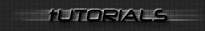

Reverse Code Engineering
Cours 1: debutant et Wdasm89 - REMOVED
Cours 2: Cracker Tomb Raider 3
Tutor 2: How to crack Tomb Raider 3
Cours 3: Cracker WWW Gif Animator 1.0 avec Soft ice
Tutor 3: How to crack WWW Gif Animator 1.0
Tutor4 : How to crack Hellforge Crackme II by LaZaRus
Cours 4 : Comment cracker Hellforge Crackme II by LaZaRus
Tutor5 : Visual basic cracking: How to crack MiZ Crackme 3
Cours 5 : Visual basic cracking: Comment cracker MiZ Crackme 3
Tutor6 : Visual basic cracking: How to crack HDmorph 1.0
Cours 6 : Visual basic cracking: Comment cracker HDmorph 1.0
Cour 7 : comment cracker WinRaR95 - REMOVED
Tutor 8 : How to crack duelist crackme 1
Cour 8 : comment cracker duelist crackme 1
Tutor 8 in GERMAN : How to crack duelist crackme 1
Tutor 9 : Visual basic cracking: How to crack Eternal Bliss anti crackme 4
Cours 9 : Visual basic cracking: Comment cracker Eternal Bliss anti crackme 4
Tutor 10 : How to crack R!SC Crakpad - REMOVED
Cour 10 : Comment cracker R!SC Crakpad - REMOVED
Tutor 11 : VB cracking: How to crack Eternal Bliss's Camouflage crackme and
how to make keygen for it
Cours 11 : VB cracking: Comment Cracker Eternal Bliss's Camouflage crackme et faire un keygen!
Tutor 12 : How to crack Diablo [ORiON] 's Crackme 4 and how to make keygen for it
cour 12 : comment cracker Diablo [ORiON] 's Crackme 4 et faire le keygen !
Tutor 13 : Visual basic cracking: How to crack ORGANIZE! Your collection apps v5.18 [VB Patching]
Cours 13 : Visual basic cracking: Comment cracker les programmes ORGANIZE! Your collection v5.18 [patch de VB]
Tutor 14 : Visual basic cracking: How to crack MiZ Crackme 2
Cours 14 : Visual basic cracking: Comment cracker MiZ Crackme 2
Tutor 15 : Visual basic cracking: How to crack Akayas crackme - REMOVED
Cour 15 : Visual basic cracking: Akayas crackme 2 - REMOVED
Tutor 16 : Manual unpacking: the newbies tut!!! - REMOVED (lame)
Cour 16 : Unpacking Manuel: tut pour debutant! - REMOVED (lame)
Tutor 17 : Visual basic cracking: How to crack Warez PuP crackme 3
Tutor 18 : How to crack Cracker World crackme 1
Cour 19 : Cracker le nag screen de winrar 2.6b - REMOVED
Tutor 20 : Visual basic cracking: how to crack EscapeRC v1.0.1 with WDASM !!!!
Tutor 21 : how to Keygen Cracking4Newbies crackme 3
Tutor 22 : Visual basic cracking: how to Keygen Ordix Mpack 1.X
Tutor 23 : Visual basic cracking: how to keygen Killer_3K crackme 2
Tutor 24 : Visual basic cracking: how to keygen Snowman32 v2.42
Tutor 25 : Visual basic cracking: how to keygen Ellipse HTML Sidekick 2000
Tutor 26 : CD Check: how to Crack KingPin French version
Tutor 27 : Visual basic cracking: how to Crack Sionide 's crackme 2
Tutor 28 : Visual basic cracking: how to Keygen Lan-box
Tutor 29 : Visual basic cracking: how to Keygen The Power 1.0
Tutor 30 : CDilla SafeDisc: Another Approach on MidTown Madness French version
Cours 30 : CDilla SafeDisc: Une autre Facon de cracker MidTown Madness version Francaise
Tutor 31 : How to Find a serial on The Phrozen Crew Trial Crackme1
Cours 31 : Calculer un serial valide sur The Phrozen Crew Trial Crackme1
Tutor 32 : JAVA REVERSE ENGINEERING
Cours 32 : JAVA REVERSE ENGINEERING: Comment cracker du Java
Tutor 33: CD Check: TRSI Crackme
Cours 34: Muad'dib Keygen Crackme #1: Modifier le crackme en son propre keygen + recoder le controle du serial
Cours 35: Comment virer Armadillo 1.75a (cryptage de fichier avec anti debugging)
tutor 35: How to unpack Armadillo 1.75a (packed file with anti debug)
tutor 36: Visual Basic cracking: How to crack Dawai's VB cd check crackme
Cours: Millenium Cracking tutorial: - A LIRE ABSOLUMENT! (115 pages)
Tutor 38: RSA encryption: Cracking TSCUBE's Crackme
Tut 39 : Reverse Engineering: adding new code to a program!
Tut 40 : How to keygen MP3 Explorer 3.2
Tut 41 : *Dongle Hunting* Reversing Autocad 14 French version
Cour 41 : Chasse au *Dongle* Reversing Autocad 14 version Francaise
Cours 42 : Commnent Cracker Devil's Sword et idée pour amméliorer sa securité + conseils
Tut 43 : How to reverse a WEBchat protocol and code a client for it.
tut 44 : how to reverse my weird crackme. protection : buffer overflow